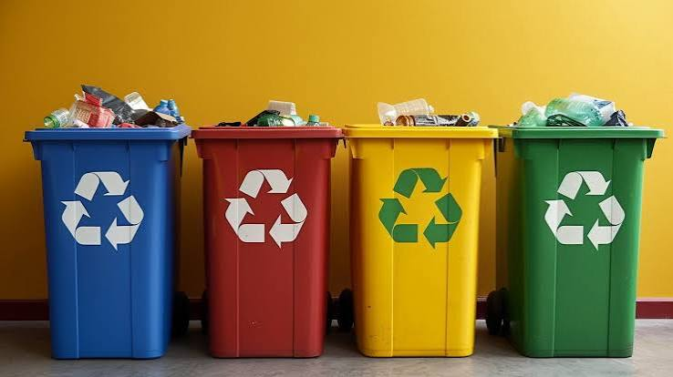

"Carbon footprint" is a term often used in discussions about climate change, but many people are unsure what it really means or how their daily choices contribute to it. This page explains the main sources of carbon emissions and highlights practical, effective ways to reduce your environmental impact through simple, sustainable actions.
What Is a Carbon Footprint?
A carbon footprint is the total amount of greenhouse gases released into the atmosphere as a result of human activities. These gases include carbon dioxide (CO₂), methane (CH₄), and nitrous oxide (N₂O), and are commonly measured in tonnes of carbon dioxide equivalent (tCO₂e). A carbon footprint helps us understand how our daily actions contribute to climate change.
A person's carbon footprint includes both direct and indirect emissions. Direct emissions come from activities such as driving a vehicle or using fuel for heating, while indirect emissions are produced during the manufacturing, transportation, and disposal of the goods and services we use every day, including food, clothing, electronics, and electricity. Understanding these sources is the first step toward making more sustainable choices and reducing our impact on the environment.
How It's Measured
The three "scopes"
Carbon emissions are grouped into three categories. Scope 1 covers direct emissions from fuel you burn, Scope 2includes emissions from the electricity you use, and Scope 3 covers indirect emissions from the products, services, and travel that support your daily life. Scope 3 is often the largest part of a carbon footprint.
Why national averages mislead
National average carbon footprint figures are useful for comparing countries, but they do not reflect the wide differences between individuals. A person who uses public transport, conserves energy, and makes sustainable purchasing choices can have a much smaller footprint than someone who drives frequently, wastes energy, and buys more carbon-intensive products. This is why individual actions matter, and why understanding your own carbon footprint is an important step towards reducing climate change.
Transport
Transportation is one of the largest contributors to many people's carbon footprints. Frequent car journeys and air travel produce significant greenhouse gas emissions, while walking, cycling, public transport, and carpooling are much lower-carbon alternatives. Choosing more sustainable ways to travel can reduce emissions immediately and make a meaningful contribution to protecting the environment.
- Short car journeys produce unnecessary emissions and can often be replaced by walking, cycling, or public transport.
- Travelling by train or bus generally produces much lower carbon emissions per passenger than travelling by plane.
- Car-sharing with others reduces fuel use, lowers emissions, and helps decrease traffic congestion.
Home Energy
Energy used for heating, cooling, lighting, and powering appliances contributes significantly to carbon emissions. The environmental impact depends on where the energy comes from, with renewable sources producing far fewer emissions than fossil fuels. Simple actions such as turning off unused lights, unplugging devices, using energy-efficient appliances, and reducing unnecessary heating or cooling can help lower both energy use and your carbon footprint.
Heating
Heating and cooling account for a large share of household energy use. Improving insulation, reducing unnecessary heating or cooling, and using energy efficiently are simple ways to lower carbon emissions and save energy.
Electricity
Choosing electricity from renewable energy sources can significantly reduce the carbon emissions associated with household energy use, helping lower your environmental impact without changing your daily routine.
Food
Food production contributes significantly to global greenhouse gas emissions. In general, plant-based foods such as fruits, vegetables, grains, and legumes have a lower environmental impact than foods that require more land, water, and energy to produce. Choosing more sustainable meals, reducing food waste, and eating a balanced diet with more plant-based options can help lower your carbon footprint while supporting a healthier planet.
- Including more plant-based meals in your diet can significantly reduce the carbon emissions associated with food production.
- Reducing food waste helps conserve the energy, water, and resources used to produce, transport, and prepare food.
- Planning meals, storing food properly, and using leftovers are simple ways to reduce waste and support a more sustainable lifestyle.
Waste

Waste may seem like a small part of your carbon footprint, but it still has an important environmental impact. Reducing waste by reusing items, recycling correctly, avoiding single-use products, and choosing durable goods helps conserve natural resources and reduces the amount of waste sent to landfills. Proper recycling is especially important, as contaminated recyclable materials often cannot be processed and may end up as general waste instead.
Reducing waste by reusing, repairing, and choosing reusable or second-hand products has a greater environmental benefit than recycling alone, as it helps avoid the emissions generated during manufacturing and production.
Common Myths
Reducing Your Footprint
Reducing your carbon footprint does not require completely changing your lifestyle overnight. Making a few realistic and consistent changes, such as using less energy, choosing sustainable transport, reducing waste, or making mindful food choices, can create a meaningful impact over time. Start with the changes that are easiest to adopt and gradually build more sustainable habits.